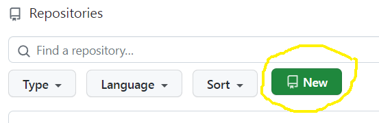
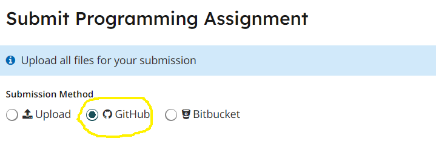

Homework 2
Last updated: Tue, 26 Sep 2023 12:13:04 -0400
Out: Mon Sep 25, 2023, 00:00 EST
Due: Sun Oct 01, 2023, 23:59 EST
Overview
In this assignment, you’ll begin to use more complicated data definitions, like compound data, and also learn more features of the big-bang framework.
This hw will be graded accordingly:
correctness (9 pts)
design recipe (20 pts)
style (5 pts)
README (1 pt)
Setup
Create a new repository for this assignment by going to the CS450 Fall 2023 GitHub Organization page and clicking "New".

Name the repository <YOUR ACCOUNT NAME>-hw2 where <YOUR ACCOUNT NAME> is your GitHub account name.
For example, if my GitHub account is cs450student then I would name my hw2 repository cs450student-hw2.
Mark the repository as Private.
Check "Add a README file".
When done click "Create repository".
Here is the hw2 starter repo. You won’t be able to fork it, but, you can copy the files into your own repo and then edit them.
Submitting
1 Before Submitting
Do not submit until all code has been thoroughly tested, independent of the autograder, and you are reasonably sure the assignment is complete and correct.
The autograder is not a software development tool so please don’t use it as one.
If you submit and get an autograder error, this means the code you wrote is not complete and correct and it’s up to you to figure out why.
The course staff is here and eager to help, but cannot do so if students don’t explain what they’ve tried first (e.g., "why is the autograder giving an error?" is not something we can help with).
The grading criteria (i.e., test suite) is subject to change. This means that the visible grade seen during submission is not the final grade.
2 Common Problems
3 Files
A submission must have the following files in the repository root:
hw2.rkt: Contains the hw solution code.
All defines should use the name specified in the exercise (ask if you are unsure) and should be provided.
The easiest way to ensure all necessary definitions are provided is to put as the second line in the file:
This automatically provides all definitions in the file. (The first line should be #lang racket)
All code should also follow proper Racket Style.
tests.rkt: This file should require hw2.rkt and define tests for it.
Specifically, it should define a rackunit test-suite which contains sufficient rackunit test cases (e.g., check-equal?, etc.) for each defined function.
hw2-bigbang.rkt: Contains the modified big-bang program from class
hw2-bigbang-tests.rkt: Tests for hw2-bigbang.rkt
README.md: Contains the required README information, including the GitHub repo url.
Also, the repository must have appropriate commit messages. See How to Write a Git Commit Message if you are unsure how to write a commit message.
4 GradeScope
When ready, submit this assignment to Gradescope hw2 using the "GitHub" submission feature with the hw2 repository selected.

Exercises
Update: When doing exercise 57, you should change the code you wrote for exercises 53-56.
In Chapter 4.5, work through the rocket example in exercises 53-57.
Put the code for these exercises (and subsequent exercises too) in a file named hw2.rkt.
Make sure to follow the The Design Recipe.
For Examples and Tests, do not use check-expect from the Beginning Student Language (even though the textbook says to). Instead, use check-equal? or other testing forms from rackunit.
Examples should be right after the define in hw2.rkt. But Tests should be put into the test-suite in tests.rkt.
In this assignment, each function should have at minimum one Example, and one more Test than Examples (so two minimum tests).
Read Chapter 4.6 about intervals and do exercise 58.
Read Chapter 4.7 about itemizations and work through the state machine examples in exercises 59-62. (You may find it helpful to take a look at the code from lecture 5.)
(Dropped Exercise 63 because we’re not using the Stepper.)
Note: For these Exercises, use define-struct to define structs (like the textbooks says), and not struct (like in the lecture slides). In particular, this means that constructors should begin with make-, e.g., make-posn instead of posn.
Read Chapter 5.1-5.4, which introduces structs, and do exercises 63-68 64-68.
Read Chapter 5.7-5.8, which explains the philosophy of data definitions in more detail, and do exercises 77-82.
UPDATE: For Exercise 77, name your time struct time.
UPDATE: For Exercise 78, name your word struct 3word.
To practice reading code, save the big-bang program from lecture 6 to a file named hw2-bigbang.rkt, and change it so when the user clicks the left-mouse button, a copy of the image is pinned to the canvas. (The original image should continue to move with the cursor.) Subsequent clicks should move the pinned image so that only one image is pinned at any time.
Make sure to fill in the missing Design Recipe steps that we didn’t get to from class (and delete the non-big-bang example code).
In this assignment, each function should have at minimum one Example, and one more Test than Examples (so two minimum tests).
This should be straightforward to do if you follow The Design Recipe and think about data representations first (but may be more difficult if you just start changing code without thinking!).
Put tests in a file called hw2-bigbang-tests.rkt.